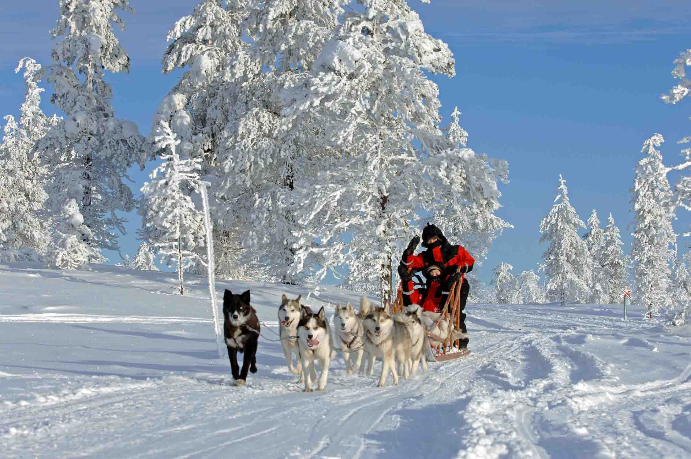
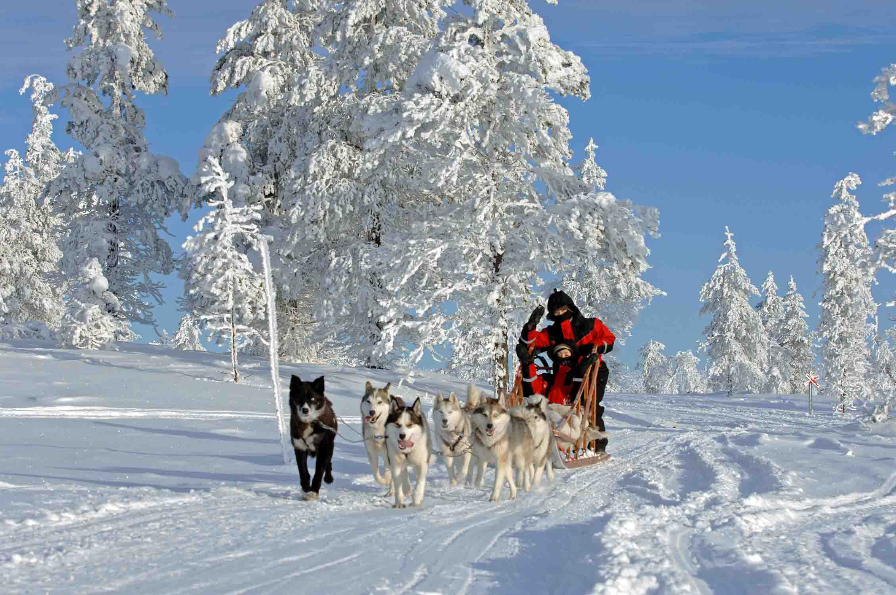

Incontri
d’autore
(di Nadia e Elena)

La rivista Thriller Noir ci ha inviate in Lapponia, sono le undici del mattino di una freddissima giornata di metà gennaio; io e Nadia siamo con Nina, la simpatica agente del Corpo Speciale della Polizia delle Renne che ci sta accompagnando a visitare il suo “luogo di lavoro” .(di Nadia e Elena)

Nina sta guidando lentamente mentre percorriamo la Statale 93 tra Alta e Kautokeino , nuvoloni neri coprono il cielo, la temperatura è di venti gradi sotto zero , soffia un vento forte che solleva mulinelli di neve, è buio pesto come nel cuore della notte, impossibile vedere il paesaggio circostante, l’asfalto è coperto da lastroni di ghiaccio, la visibilità è così limitata che a fatica si distingue il ciglio della strada; improvvisamente spunta un’ombra sulla destra , una renna, Nina sterza bruscamente, l’auto sbanda e andiamo a sbattere contro un cumolo di neve.
Sotto shock , scendiamo dall’auto , fortunatamente arriva un uomo che avanza veloce sugli sci: Nina ci presenta Aslak, un allevatore di renne vecchio stile, ci spiega; è l’unico a non fare uso di motoslitte , GPS, cellulare.
Siamo colpite dal suo sguardo duro ma velato di tristezza, ci offre riparo nel suo Gumpi , finalmente ci possiamo rilassare al caldo del camino sedute su panche ricoperte da pelli di renna.
Nina ci spiega Il duro lavoro della Polizia delle Renne continuamente impegnata a dirimere le liti tra gli allevatori , verificare la corretta marchiatura delle renne e il rispetto dei confini nei territori dei pascoli; Aslak racconta la difficile vita degli allevatori sul vidda, l’altopiano desertico, e poi storie antiche della popolazione Sami , dei loro usi e costumi e delle tante leggende che si tramandano di generazione in generazione.
Fuori infuria una bufera di neve, io e Nadia ci guardiamo sconsolate , Aslak indossa un mantello di pelli di renne , la chapka , infila gli sci e sparisce nella notte … direttore non chiudere la rivista …..l’articolo sta arrivando!